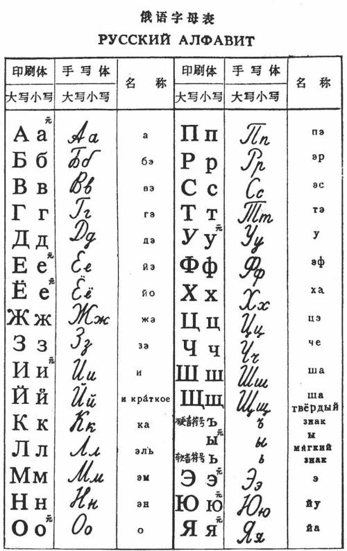
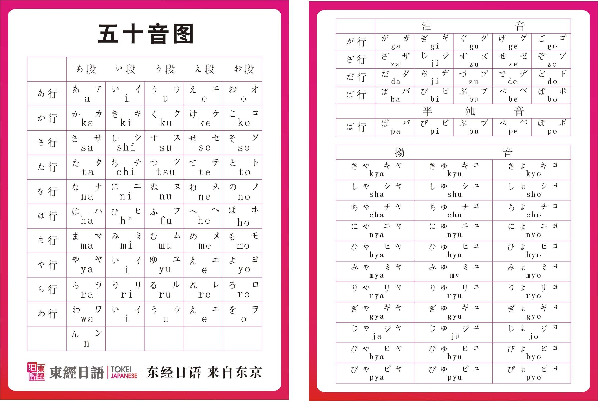

语言学习¶
一些关于语言学习的材料。
俄语¶
http://learnrussian.rt.com/lessons/
俄语词典¶
俄语字母表¶


俄语一到六格¶
- Nominative 主格
- accusative 宾格
- genitive 属格 （Tom's)
- prepositional 前置词的
- dative 与格 （间接宾语）
- instrumental 工具的
元音弱化¶
А and О become the same uh-sound
И and Е (Э) become the same sound similar to "i" in "hit"
Я actually becomes an i-like sound, not an uh-like (except in a few words).
This also affects "а" after ч,ш,щ,ж or ц in many words (sadly, not all).
So, when a vowel is not stressed, it becomes weaker, somewhat shorter,
and also some vowels become indistinguishable.
The unstressed syllable is strongest just before the stress.
In all other places it is even weaker than that
(though, some long words, especially compounds, may acquire a secondary stress).
This makes the system different from the English one,
where stronger and weaker syllables tend to alternate.
以上为多邻国俄语（英语）课程对于元音弱化的解释。
音变¶
俄语中，形容词、数次的阳性单数第二格的“结尾”就是"го"，读作“во”。
单词¶
уже already
日语¶
https://www3.nhk.or.jp/nhkworld/zh/learnjapanese/
http://www.imabi.net/beginnersi.htm
日语五十音表¶

IMABI 学习¶
学习IMABI过程中的一些笔记与翻译。
第 8 课 名词与代词¶
meishi 名詞 : 人物、地点、状态、事件、质量、事物。
在日语中，名词无单复数与阴阳性之分。故无类似英语中 a, an, the 之类冠词。
本课单词表
| 释义 | 罗马音与书写 | 释义 | 罗马音与书写 | 释义 | 罗马音与书写 |
|---|---|---|---|---|---|
| 卡拉OK | Karaoke カラオケ | 拉面 | Rāmen ラーメン | 空手道 | Karate 空手 |
| 酒 | (O-)sake（お）酒 | 寿司 | Sushi 寿司 | 山 | Yama 山 |
| 动画 | Anime アニメ | 漫画 | Manga マンガ | 狗 | Inu 犬 |
| 猫 | Neko 猫 | 茶 | Ocha お茶 | 水 | Mizu 水 |
| 海 | Umi 海 | 火 | Hi 火 | 竹子 | Take 竹 |
| 山 | Oka 丘 | 木，树 | Ki 木 | 草 | Kusa 草 |
| 人 | Hito 人 | 车 | Kuruma 車 | 日元 | En 円 |
| 花 | Hana 花 | 声音 | Oto 音 | 天空 | Sora 空 |
| 口 | Kuchi 口 | 手 | Te 手 | 脚・足 | Ashi 脚・足 |
| 耳 | Mimi 耳 | 男 | Otoko 男 | 女 | On'na 女 |
| 日 | Hi/taiyō 日・太陽 | 石 | Ishi 石 | 河 | Kawa 川 |
| 村 | Mura 村 | 城镇，镇 | Machi 町 | 虫 | Mushi 虫 |
| 乡下，农村 | Inaka 田舎 | 地面，土壤 | Tsuchi 土 | 书本 | Hon 本 |
| 名字 | Namae 名前 | 力量；力气 | Chikara 力 | 目 | Me 目 |
| 王 | Ō 王 | 女王 | Jo'ō 女王 | 雨 | Ame 雨 |
| 金，钱 | Kin 金 | 銀 | Gin 銀 | 钱 | Okane お金 |
| 学校 | Gakkō 学校 | 生丝，丝线 | Ito 糸 | 年 | Toshi 年 |
| 云 | Kumo 雲 | 歌，诗 | Uta 歌 | 鱼，鱼类，鱼肉 | Sakana 魚 |
| 面孔，表情 | Kao 顔 | 牛 | Ushi 牛 | 外形，形状，样子 | Katachi 形 |
尽管日语没有单复数变形，但是可以通过在名词后面加词缀tachi たち来达到类似我们汉语们的效果。
- 女性たち Joseitachi 女人们
- 男性たち Danseitachi 男人们
- 犬たち Inutachi 一群狗子
日语的专有名词：类似英语中专有名词的概念。中文和日语关系真的紧密啊……下面的表格都不想翻译英语了。
| 释义 | 罗马音与书写 | 释义 | 罗马音与书写 |
|---|---|---|---|
| 东京 | Tōkyō 東京 | 京都 | Kyōto 京都 |
| 大阪 | Ōsaka 大阪 | 横浜 | Yokohama 横浜 |
| Japan | Nihon/Nippon 日本 | 美国 | Amerika アメリカ |
| 俄罗斯 | Roshia ロシア | 中国 | Chūgoku 中国 |
| 韩国 | Kankoku 韓国 | Hokkaido | Hokkaidō 北海道 |
| Honshu | Honshū 本州 | Shikoku | Shikoku 四国 |
| Kyushu | Kyūshū 九州 | Okinawa | Okinawa 沖縄 |
| 亚洲 | Ajia アジア | 欧洲 | Yōroppa ヨーロッパ |
| Africa | Afurika アフリカ | Australia | Ōsutoraria オーストラリア |
| Antarctica | Nankyokutairiku 南極大陸 | India | Indo インド |
| 关东地区 | Kanto Chihō 関東地方 | Kinki Region | Kinki Chihō 近畿地方 |
| Shinzo Abe | Abe Shinzō 安倍晋三 | 巴莱克 奥巴马 | Baraku Obama バラク・オバマ |
| 东京 Skytree | Tokyo Sukaitsurii 東京スカイツリー | Ueno Park | Ueno Kōen 上野公園 |
知识点：
- 日本有四个主要岛屿。从北至南分别是北海道、本州、四国、九州，其中本州是第一大岛。九州以南是一串被叫做冲绳Okinawa的岛屿链。
- 关东地区 Kanto Chihō 包括日本"首都"附近的地区，即东京附近。
- 近畿地区 Kinki Chihō 包括大阪和进度附近的地区。
- 上野公園是东京的一个大公园。
外来词：从其他语言中借用的词语。例如汉语的咖啡、沙发等。日语中绝大部分外来词来自英语与汉语。外来词在日语中叫做 Gairaigo 外来語 。值得注意的是外来词通常仅包括近两三个世纪传到日本的词汇。而在日语发展阶段从汉语中借用的词语通常不被认为是外来语。但是，近两三个世纪传过去的汉语，例如 炒饭 ： chāhan 炒飯 被认作是外来语。对于英语使用者来说，非常需要注意的是，不要按照英语发音念外来词。（一定要有日式味道，否则日语使用者会听不懂的）
| 释义 | 罗马音与书写 | 释义 | 罗马音与书写 |
|---|---|---|---|
| Meter | Mētoru メートル | Game | Gēmu ゲーム |
| Bus | Basu バス | Pen | Pen ペン |
| Sofa | Sofā ソファー | Pie/pi | Pai パイ |
| Point | Pointo ポイント | Cola | Kōra コーラ |
| Coffee | Kōhii コーヒー | Tobacco | Tabako タバコ |
| Tomato | Tomato トマト | Banana | Banana バナナ |
| 人称 | 单数 | 复数 |
|---|---|---|
| 1st | Wata(ku)shi 私、Boku 僕 | Wata(ku)shitachi 私たち、Bokutachi 僕たち |
| 2nd | Anata あなた | Anatatachi あなたたち |
| 3rd | Kare 彼 (He)、 Kanojo 彼女 (She) | Karera 彼ら (They)、 Kanojotachi 彼女たち (They) |
知识点：
- Watakushi わたくし是 watashi わたし 的敬体。但是わたし可以应付绝大多数的场合。另外很多时候日语会省略わたし的部分。
- 僕 主要由男性使用，无论老幼。
你在日语中有多种表示方式。但是あなた是最为中性（从尊重程度和立场来说）的一种表达。- 「あなた」还常用于恋人、夫妇之间的对话，女方称呼男方时通常使用「あなた」，这时它可以翻译为"老公"，"亲爱的"。
- 在日常的对话语境中，
kare 彼和kanojo 彼女也表示男朋友、女朋友。 - 注意Kare 彼的复数是Karera 彼ら 而不是直接加 たち.
- Karera 彼ら可以表达一群人（包括男性与女性）, 但是 kanojotachi 彼女たち 只能表示一群女性.
- 日语中没有it或者说我们常说的"动物它"，这个概念与"那个"被结合了起来。
第三人称的所有格就在代词后面加の即可。
| 离说话人近 | 离听者近/ 只有说话人知道 | 离说话人与听者都远/ 说话人和听者都知道 |
|---|---|---|
| 这里 | 那里 | 那里 |
| Koko ここ | Soko そこ | Asoko あそこ |
| 这个 | 那个 | 那个 |
| Kore これ | Sore それ | Are あれ |
知识点：
- Sore それ是最接近 it (动物它) 的日语了。
- 当讨论的东西是物理上看得见的，我们从空间上的临近性区分使用的指示代词。若讨论的事物是不可见的，我们从说话人与听者对事务的了解进行区分，注意这时仅有两种区分，具体参见表格。